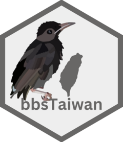

Translate Bird Species' Chinese Common Name to Scientific Name
Source:R/bbs_translate.R
bbs_translate.RdThis function is intended for use under bbs_fetch and bbs_plotmap. This function helps users find the scientific names of birds from their Chinese common names for species found in Taiwan.
Value
A vector of bird species' scientific names. If the input species name is not
included in the bird list of Taiwan, NA will be returned. Please check for any typos.
Examples
# For a single species
bbs_translate("白頭翁")
#> [1] "Pycnonotus sinensis"
# For multiple species
bbs_translate(target_species = c("烏頭翁", "白頭翁", "紅嘴黑鵯", "白耳畫眉"))
#> [1] "Pycnonotus taivanus" "Pycnonotus sinensis"
#> [3] "Hypsipetes leucocephalus" "Heterophasia auricularis"